A tymczasem w Cameracie...
.
2014-04-26
Przyjeżdżamy do Skawiny o 16.30. Godz. 17.00 chóry gotowe, zaczynamy próbę.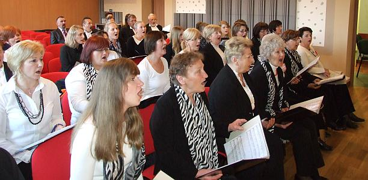
Chóry występują razem. Idzie wszystko sprawnie, tylko zmieniają się dyrygentki.
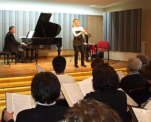 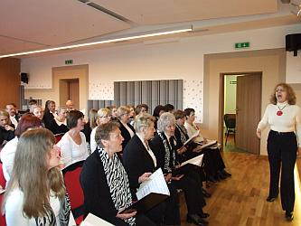
Udajemy się na miejsce koncertu.
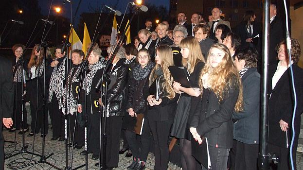
Jeszcze tylko przygotowania techniczne całej uroczystości i koncertu.
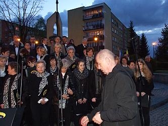 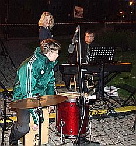
Zaczynamy uroczystość.
Biorą w niej udział wszyscy Ci, którzy chcą oddać hołd Wielkiemu Polakowi.
Na spotkanie przybyli druhny i druhowie NZH „Czerwony Mak”,
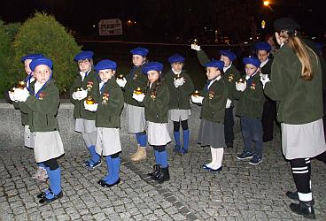 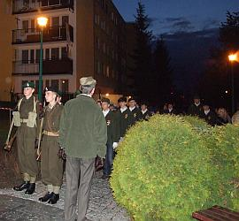
przedstawiciele władz: burmistrz Skawiny Adam Najder wraz z zastępcami Stanisławem Żakiem i Pawłem Kolasą, sekretarzem gminy Ewą Szczepanik oraz duszpasterze.
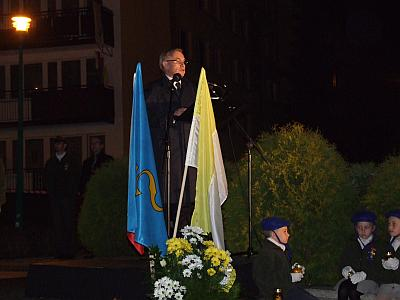
Obecny był również dyrektor Szkoły Muzycznej I st. Konrad Szota, który przygotował i prowadził całą uroczystość.
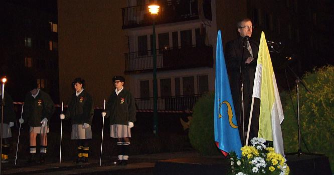
O profesjonalną oprawę artystyczną wydarzenia zadbali chór Gloria Dei z Poręby Wielkiej pod dyr. Beaty Klimek oraz my, czyli chór Camerata pod dyr. Izabeli Szoty.
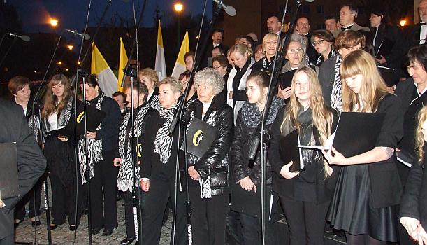/div>
Punktualnie w godz. śmierci wszyscy złożyli hołd przyszłemu świętemu.
 do aktualności
do aktualności
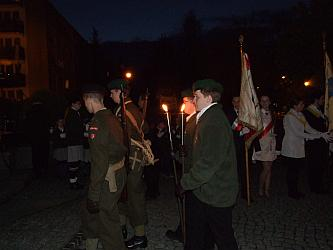 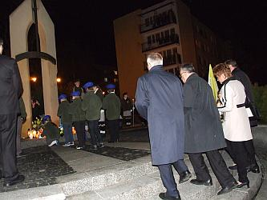
Po zakończeniu uroczystości do północy trwało czuwanie modlitewne w kościele
pw. Miłosierdzia Bożego w Skawinie.

© Stowarzyszenie Muzyczne Chór Camerata Wieliczka
Projekt i wykonanie:  Prowadzenie strony: Małgorzata Wysocka-Cebula
Prowadzenie strony: Małgorzata Wysocka-Cebula